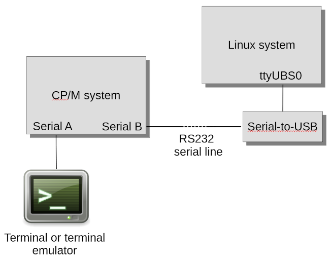
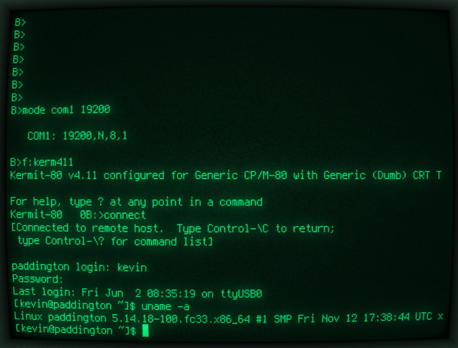

Using a CP/M machine to log into a Linux server using an RS232 connection
 Because -- why not?
Because -- why not?
Also, this is a good test that the serial communications ports and cables are working properly. The objective here is to use my CP/M system, which is based on the RC2014 bus, to operate a Linux server using RS232. It's a reasonable place to start fiddling with serial communications, because we know that Linux will support terminal sessions over a serial connection -- although this can be a little fiddly to set up.
System set-up
The diagram below shows the test configuration.

The CP/M system has its serial console port connected to a terminal emulator
(which is a self-contained unit based on a Raspberry Pi 3, but that's not really important).
The second serial port is connected via a serial cable to the Linux machine which, since
modern PC-type hardware doesn't have a real serial port, uses a USB-serial adapter.
At the Linux level, this serial connection appears as /dev/ttyUSB0. Most
USB-serial adapters are supported by modern Linux distributions without additional software
or configuration.
All the 'RS232' lines in this diagram are actually using 5V TTL logic levels, not real RS232 (which typically uses 12V). In a simple test like this, there's no point adapting the logic levels to real RS232 and back again. Of course, to use a 'real' RS232 device, like a serial printer, you'd need a level converter.
The CP/M system
The system I'm using has a Z180-based main board with two serial ports. One of these is used
for the main user console, while the other is unassigned. This second serial port appears
in CP/M as UC1 ("user console 1"), among other things.
The CP/M system uses ROMWBW firmware, which supplies a CP/M utility mode for setting
the serial port properties (baud rate, etc). This utility is specific to the CP/M implementation
-- other firmwares will have their own ways of setting up ports. Within the mode
utility, the second serial port is referred to as COM1.
I'm using Kermit on CP/M to make the connection, although ROMWBW supplies a simple utility
talk.com which will actually work fine for this simple test. I've been using
Kermit because it's supposed to support software flow control (of which, more later).
CP/M Kermit exists in various versions for particular hardware. I'm using the 'generic'
version, which should work on any CP/M whose BIOS has IOBYTE support. That is,
it has the ability to redirect the standard console to auxiliary hardware. Because
Kermit can be slightly awkward to build,
here is a binary of Generic Kermit 4.11 for CP/M.
The fastest baud rate I've been able to use reliably is 19200. To set the serial port to use this baud rate, I do:
B> mode com1 19200
The Linux system
My Linux system is running Fedora which, for better or worse, uses systemd to
control log-in access to serial terminals. To start a log-in listener on the USB-serial port, I
use systemctl as follows:
# setenforce 0 # stty -F /dev/ttyUSB0 19200 # systemctl start getty@ttyUSB0
setenforce 0 turns off SELinux security enforcement, which might not be a good plan
in a production system. This is only necessary because of a bug (sigh) in the systemd
implementation in my version of Fedora -- other systems might not need this measure.
It's necessary to set the baud rate before starting the listener -- I've noticed that if I do it later, it appears to change but, in fact, does not.
For the record, what systemctl actually ends up doing is to run agetty,
like this:
agetty -o -p -- \u --noclear ttyUSB0 vt220
agetty is a modern, cut-down version of the traditional Unix getty, which
listens for serial connections, and invokes login to start a user session. The way
that systemd invokes agetty can be modified by hacking on various
systemd configuration files, but the default behaviour is fine for simple
testing.
Logging in
With agetty running on the Linux system, and both systems configured to use the
same (low-ish) baud rate, it's just a matter of running kerm411 on the CP/M
system, and typing CONNECT at the prompt. Here is a screenshot of a log-in session, just
to demonstrate that it actually works.

Problems
I expected to have problems with terminal compatibility but, in fact, I did not. I feel that it's only fair to point out that this is because I'm using a Linux-based terminal emulator with my CP/M system. By default, Linux assumes that the terminal -- whether it's a real terminal or just an on-screen console -- is broadly VT100 compatible.
The heyday of CP/M predates the VT100, really. If I weren't using a VT100-compatible terminal emulator,
but a real serial terminal of earlier vintage, things would be a little more complicated. However,
Linux has wide terminal support so, provided I use a supported terminal, probably all I need
to do in Linux is to set the TERM environment variable to match the terminal
I'm using. So, in fact, terminal compatibility isn't really a problem at all.
What definitely is a problem, however, is the lack of hardware flow control in the serial port. My Z180-based main board has full flow control in the console port, but no flow control in the second serial port. This, I'm told, is a limitation of the Z180.
I've been using Kermit for communications because it's documented as supporting software (XON/XOFF) flow control. This should be a viable alternative to hardware flow control but, in practice, it doesn't seem to work very well. If the Linux system sends a large amount of data to the CP/M system (and 'large' here depends on the baud rate), some characters get dropped. I suspect that the Linux system is so fast, compared to the CP/M system that, by the time the CP/M system sends its 'XOFF' to pause transmission, the Linux system has already sent a heap of data. Whatever the explanation, I can't get baud rates greater than 19200 to behave well. To be fair, it I were using a long serial connection between the two computers, or a telephone modem of 1980's vintage, I probably wouldn't be able to get speeds much faster than that anyway.
Closing remarks
I can't think of many good reasons to use a CP/M system as a front end to a Linux server -- especially when the CP/M system has its own Linux-based terminal. Still, it's good to know that ancient technologies can, to some extent, be used with modern ones.